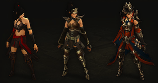

秘術師
秘術師放弃了多数魔法使用者所认可的安全的方法，是以自己身体作为奥术能量容器的叛逆的施法者。她们操作任何力量来瓦解、点燃或冻住她们的敌人，她们也可以控制时间和光线来传送、创造强大的幻象和折射攻击。
法师抓住魔杖和法杖来强化她们不是特别熟练的魔法，将敌人轰杀并同时争取能量和必要的时间来施放更加华丽而具有毁灭性的奥术魔法。
除了个别例外，秘術師通常都远离危险而保持一定距离。就如同一台活的炮台一样，秘術師非常擅长远距离的攻击。
关键特性
-
元素大师秘術師已经完全掌握了庇护所世界的元素之力。火焰、雷电、寒冰和狂风都为她们所掌控，她们可以找出对手的弱点并针对性地攻击。
-
范围攻击战场会被召唤来的大杀伤魔法覆盖 - 法师的攻击可以同时对大群敌人造成伤害，光束技能可以对靠的越近的敌人造成越多的创伤，而那些在战场上犹豫不决的人会被法师召唤的落石砸瘪。 -
防御魔法虽然比起其他职业，秘術師在物理上非常脆弱，但他们可以使用防御魔法来保护自己。无论是给自己穿上钻石的护甲，或是创造镜像来迷惑敌人，甚至可以攻击并减速那些胆敢激怒她们的愚蠢的生物。 -
无尽能量法师很少用光她们的能量。托恢复速度极快的奥术能量之福，她们可以非常随心所欲地施放法术，并随着经验的增长更好地控制着这些力量。
能量源：奥术能量
不同于一般小心谨慎的魔法使用者，秘術師就像是奥术能量的节杖。这种能量贯穿于秘術師，犹如自己身体的一部分一样的自如施展。
秘術師持续的充满着奥术能量 - 奥术能量快速的重生，所以让秘術師们好像能永无止尽的施放他们较弱的法术。只有在他们一次性的耗竭自己所有储存的能量，秘術師们才会暴露于危险之下。
但是，要是一不小心，没有保持应有的节奏，奥术能量有可能对秘術師自身进行报复，所以秘術師必须在重复使用强烈的法术时，等待一定的冷却时间。这些法术 - 召唤从天而降的陨石术，倾注而下的强大力量将多个敌人撞击倒地，或者停止时间流逝的能量球 - 这些法术的强大力量绝对值得等待。
特色装备
秘術師可以通过几乎任何物品来作为魔力的引导，但也有几样更加有用。秘術師可以使用魔法宝珠，这是一种副手装备为她们提供视野和知识来辅助她们施法，或者作为能量的容器来使用。秘術師通常会使用传统的（带有附魔的）法杖，这些短小的棍子是引导她们的奥术能量用于杀伤敌人的最好武器。

装备变化
